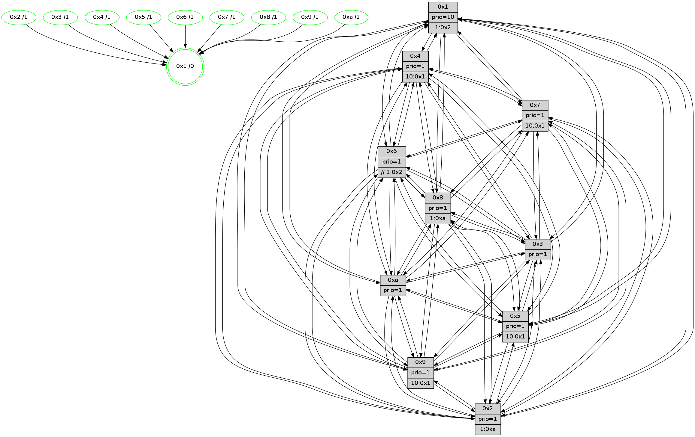

>> << IDX [start] -100 -25 -5 +0 +5 +25 +100 [1300.056566]
 Previous packets
----------------------------------------------------------------------
1295.327783 beacon01(faad) #0 coord=01,02,03,04,05,06,07,0a,09,08 cycle=688.0ms assoc
-- color-indic=1 64 c4 a1
1295.337766 beacon02(faad) #0 coord=01,02,03,04,05,06,07,0a,09,08 cycle=688.0ms assoc 64 57 90
1295.347765 beacon03(faad) #0 coord=01,02,03,04,05,06,07,0a,09,08 cycle=688.0ms assoc 64 2d dd
1295.357765 beacon04(faad) #0 coord=01,02,03,04,05,06,07,0a,09,08 cycle=688.0ms assoc 64 5a 37
1295.367765 beacon05(faad) #0 coord=01,02,03,04,05,06,07,0a,09,08 cycle=688.0ms assoc 64 20 7a
1295.377767 beacon06(faad) #0 coord=01,02,03,04,05,06,07,0a,09,08 cycle=688.0ms assoc 64 ae ad
1295.387767 beacon07(faad) #0 coord=01,02,03,04,05,06,07,0a,09,08 cycle=688.0ms assoc 64 d4 e0
1295.397771 beacon0a(faad) #0 coord=01,02,03,04,05,06,07,0a,09,08 cycle=688.0ms assoc 64 a5 eb
1295.407771 beacon09(faad) #0 coord=01,02,03,04,05,06,07,0a,09,08 cycle=688.0ms assoc 64 2b 3c
1295.417772 beacon08(faad) #0 coord=01,02,03,04,05,06,07,0a,09,08 cycle=688.0ms assoc 64 51 71
1295.430899 [Hello(9): seq=770 sym=2,5,3,4,7,6,8,10,1 sysInfo=hasWarning stat=2:11,0,8,10/5:7,8,11,7/3:13,6,1,3/4:2,5,13,1/7:6,11,15,3/6:9,10,7,13/8:0,11,11,4/10:9,6,15,4/1:7,9,5,1]
1295.434584 [Color(1) seq=506 @0:0 prio=10 >1.@2,1.@3,1.@4,1.@5]
1295.437908 [Hello(4): seq=826 sym=5,7,6,2,3,9,8,10,1 sysInfo= stat=5:12,4,12,1/7:4,8,1,1/6:12,0,1,14/2:3,6,10,0/3:10,11,4,14/9:14,14,5,1/8:5,1,6,1/10:2,3,8,14/1:8,15,4,1]
1295.442015 [Color(4) seq=365 @0:0 prio=1 >10.@1,1.@2,1.@3,1.@5]
1295.447005 [Hello(8): seq=770 sym=5,2,3,7,9,6,4,10,1 sysInfo=hasWarning stat=5:1,3,15,0/2:12,2,1,12/3:5,6,6,3/7:2,4,1,0/9:10,5,1,4/6:7,5,3,15/4:4,14,7,1/10:3,10,5,4/1:13,1,3,0]
1295.450733 [Hello(10): seq=759 sym=6,2,3,8,7,5,9,4,1 sysInfo=hasWarning stat=6:7,7,9,3/2:8,2,11,11/3:11,15,14,14/8:0,10,7,2/7:3,14,2,8/5:10,13,7,0/9:0,13,0,4/4:1,12,2,1/1:14,4,13,1]
1295.455465 [Hello(7): seq=826 sym=2,3,5,6,4,8,9,10,1 sysInfo=hasWarning stat=2:1,11,9,3/3:9,3,11,3/5:5,9,4,2/6:12,10,9,11/4:9,13,4,0/8:6,3,4,0/9:7,13,4,1/10:4,6,8,6/1:0,9,1,0]
1295.458146 [Color(5) seq=389 @0:0 prio=1 >10.@1,1.@6,1.@7,1.@8]
1295.459826 [Color(8) seq=425 @0:0 prio=1 >1.@a]
1295.462273 [Color(7) seq=354 @0:0 prio=1 >10.@1,1.@5,1.@6,1.@8]
----------------------------------------------------------------------
1296.115912 beacon01(faad) #0 coord=01,02,03,04,05,06,07,0a,09,08 cycle=688.0ms assoc
-- color-indic=1 64 00 af
1296.125895 beacon02(faad) #0 coord=01,02,03,04,05,06,07,0a,09,08 cycle=688.0ms assoc 64 93 9e
1296.135896 beacon03(faad) #0 coord=01,02,03,04,05,06,07,0a,09,08 cycle=688.0ms assoc 64 e9 d3
1296.145895 beacon04(faad) #0 coord=01,02,03,04,05,06,07,0a,09,08 cycle=688.0ms assoc 64 9e 39
1296.155897 beacon05(faad) #0 coord=01,02,03,04,05,06,07,0a,09,08 cycle=688.0ms assoc 64 e4 74
1296.165894 beacon06(faad) #0 coord=01,02,03,04,05,06,07,0a,09,08 cycle=688.0ms assoc 64 6a a3
1296.175896 beacon07(faad) #0 coord=01,02,03,04,05,06,07,0a,09,08 cycle=688.0ms assoc 64 10 ee
1296.185900 beacon0a(faad) #0 coord=01,02,03,04,05,06,07,0a,09,08 cycle=688.0ms assoc 64 61 e5
1296.195901 beacon09(faad) #0 coord=01,02,03,04,05,06,07,0a,09,08 cycle=688.0ms assoc 64 ef 32
1296.205900 beacon08(faad) #0 coord=01,02,03,04,05,06,07,0a,09,08 cycle=688.0ms assoc 64 95 7f
1296.218123 [Hello(1): seq=736 sym=4,2,9,5,10,3,8,6,7 sysInfo=coloring-mode-on,ColoringModeRequestCalled stat=4:5,2,10,2/2:10,6,5,4/9:12,5,9,1/5:7,10,12,8/10:6,14,7,7/3:5,13,5,10/8:15,11,6,1/6:12,12,5,0/7:14,10,13,0]
1296.221879 [Hello(6): seq=827 sym=2,3,5,4,7,9,8,10,1 sysInfo=hasWarning stat=2:2,8,1,0/3:11,15,4,1/5:11,13,12,3/4:10,6,13,7/7:6,2,6,14/9:9,7,4,10/8:6,9,15,5/10:2,15,12,12/1:7,9,4,1]
1296.225332 [Color(6) seq=459 @0:0 prio=1 >>1.@2,1.@3,1.@4]
1296.226877 [Color(10) seq=416 @0:0 prio=1]
1296.228289 [Hello(3): seq=827 sym=1,7,6,2,4,8,9,10,5 sysInfo=hasWarning stat=1:9,14,5,0/7:7,1,13,13/6:6,11,2,0/2:14,14,10,1/4:1,13,0,12/8:14,0,8,4/9:6,4,1,0/10:9,0,3,4/5:6,11,4,0]
1296.232701 [Color(3) seq=456 @0:0 prio=1]
1296.240365 [Hello(5): seq=827 sym=7,6,4,3,1,9,8,10,2 sysInfo=hasWarning stat=7:8,15,4,15/6:12,11,2,4/4:8,6,10,14/3:3,5,15,1/1:11,9,1,0/9:1,2,8,10/8:4,0,7,3/10:9,5,7,8/2:13,10,15,7]
1296.244555 [Hello(2): seq=823 sym=4,5,7,6,3,9,8,10,1 sysInfo=hasWarning stat=4:13,4,9,12/5:6,3,6,2/7:9,0,9,0/6:1,4,0,0/3:9,3,5,12/9:13,5,15,9/8:6,2,4,11/10:1,12,9,10/1:10,10,15,0]
1296.248004 [Color(2) seq=403 @0:0 prio=1 >1.@a]
----------------------------------------------------------------------
1296.904042 beacon01(faad) #0 coord=01,02,03,04,05,06,07,0a,09,08 cycle=688.0ms assoc
-- color-indic=1 64 bc aa
1296.914025 beacon02(faad) #0 coord=01,02,03,04,05,06,07,0a,09,08 cycle=688.0ms assoc 64 2f 9b
1296.924024 beacon03(faad) #0 coord=01,02,03,04,05,06,07,0a,09,08 cycle=688.0ms assoc 64 55 d6
1296.934024 beacon04(faad) #0 coord=01,02,03,04,05,06,07,0a,09,08 cycle=688.0ms assoc 64 22 3c
1296.944025 beacon05(faad) #0 coord=01,02,03,04,05,06,07,0a,09,08 cycle=688.0ms assoc 64 58 71
1296.954025 beacon06(faad) #0 coord=01,02,03,04,05,06,07,0a,09,08 cycle=688.0ms assoc 64 d6 a6
1296.964028 beacon07(faad) #0 coord=01,02,03,04,05,06,07,0a,09,08 cycle=688.0ms assoc 64 ac eb
1296.974031 beacon0a(faad) #0 coord=01,02,03,04,05,06,07,0a,09,08 cycle=688.0ms assoc 64 dd e0
1296.994030 beacon08(faad) #0 coord=01,02,03,04,05,06,07,0a,09,08 cycle=688.0ms assoc 64 29 7a
1297.005579 [Hello(9): seq=771 sym=2,5,3,4,7,6,8,10,1 sysInfo=hasWarning stat=2:12,1,8,10/5:8,9,11,7/3:14,7,1,3/4:3,6,13,1/7:7,12,15,3/6:9,11,7,13/8:1,12,11,4/10:10,7,15,4/1:8,10,5,1]
1297.008816 [Color(5) seq=390 @0:0 prio=1 >10.@1,1.@6,1.@7,1.@8]
1297.010830 [Hello(10): seq=760 sym=6,2,3,8,7,5,9,4,1 sysInfo=hasWarning stat=6:7,7,9,3/2:9,3,11,11/3:12,0,14,14/8:0,11,7,2/7:4,15,2,8/5:11,14,7,0/9:0,13,0,4/4:1,12,2,1/1:15,4,13,1]
1297.013557 [Color(1) seq=507 @0:0 prio=10 >1.@2,1.@3,1.@4,1.@5]
1297.015234 [Color(4) seq=366 @0:0 prio=1 >10.@1,1.@2,1.@3,1.@5]
1297.017407 [Hello(7): seq=827 sym=2,3,5,6,4,8,9,10,1 sysInfo=hasWarning stat=2:2,12,9,3/3:10,4,11,3/5:6,9,4,2/6:13,11,9,11/4:9,13,4,0/8:6,3,4,0/9:8,13,4,1/10:4,7,8,6/1:1,9,1,0]
1297.020999 [Hello(8): seq=771 sym=5,2,3,7,9,6,4,10,1 sysInfo=hasWarning stat=5:2,3,15,0/2:13,3,1,12/3:6,7,6,3/7:2,5,1,0/9:11,5,1,4/6:8,6,3,15/4:4,14,7,1/10:3,11,5,4/1:14,1,3,0]
1297.024850 [Color(7) seq=355 @0:0 prio=1 >10.@1,1.@5,1.@6,1.@8]
1297.027287 [Color(8) seq=426 @0:0 prio=1 >1.@a]
----------------------------------------------------------------------
1297.692175 beacon01(faad) #0 coord=01,02,03,04,05,06,07,0a,09,08 cycle=688.0ms assoc
-- color-indic=1 64 28 73
1297.702158 beacon02(faad) #0 coord=01,02,03,04,05,06,07,0a,09,08 cycle=688.0ms assoc 64 bb 42
1297.712158 beacon03(faad) #0 coord=01,02,03,04,05,06,07,0a,09,08 cycle=688.0ms assoc 64 c1 0f
1297.722156 beacon04(faad) #0 coord=01,02,03,04,05,06,07,0a,09,08 cycle=688.0ms assoc 64 b6 e5
1297.732158 beacon05(faad) #0 coord=01,02,03,04,05,06,07,0a,09,08 cycle=688.0ms assoc 64 cc a8
1297.742159 beacon06(faad) #0 coord=01,02,03,04,05,06,07,0a,09,08 cycle=688.0ms assoc 64 42 7f
1297.752157 beacon07(faad) #0 coord=01,02,03,04,05,06,07,0a,09,08 cycle=688.0ms assoc 64 38 32
1297.762163 beacon0a(faad) #0 coord=01,02,03,04,05,06,07,0a,09,08 cycle=688.0ms assoc 64 49 39
1297.772162 beacon09(faad) #0 coord=01,02,03,04,05,06,07,0a,09,08 cycle=688.0ms assoc 64 c7 ee
1297.782163 beacon08(faad) #0 coord=01,02,03,04,05,06,07,0a,09,08 cycle=688.0ms assoc 64 bd a3
1297.794030 [Hello(5): seq=828 sym=7,6,4,3,1,9,8,10,2 sysInfo=hasWarning stat=7:9,0,4,15/6:12,11,2,4/4:9,7,10,14/3:3,5,15,1/1:11,10,1,0/9:2,2,8,10/8:5,1,7,3/10:9,5,7,8/2:14,11,15,7]
1297.797912 [Color(9) seq=387 @0:0 prio=1 >10.@1,1.@5,1.@a]
1297.800091 [Hello(2): seq=824 sym=4,5,7,6,3,9,8,10,1 sysInfo=hasWarning stat=4:14,5,9,12/5:6,4,6,2/7:10,1,9,0/6:1,4,0,0/3:9,3,5,12/9:14,5,15,9/8:7,3,4,11/10:1,12,9,10/1:11,11,15,0]
1297.803735 [Hello(6): seq=828 sym=2,3,5,4,7,9,8,10,1 sysInfo=hasWarning stat=2:3,9,1,0/3:12,0,4,1/5:12,14,12,3/4:10,7,13,7/7:7,3,6,14/9:10,7,4,10/8:7,10,15,5/10:3,0,12,12/1:8,10,4,1]
1297.806546 [Color(2) seq=404 @0:0 prio=1 >1.@a]
1297.808496 [Color(6) seq=460 @0:0 prio=1 >>1.@2,1.@3,1.@4]
1297.813773 [Color(10) seq=417 @0:0 prio=1]
1297.815102 [Hello(1): seq=737 sym=4,2,9,5,10,3,8,6,7 sysInfo=coloring-mode-on,ColoringModeRequestCalled stat=4:5,3,10,2/2:11,7,5,4/9:13,5,9,1/5:8,10,12,8/10:6,15,7,7/3:6,14,5,10/8:0,12,6,1/6:13,13,5,0/7:15,11,13,0]
1297.818127 [Hello(3): seq=828 sym=1,7,6,2,4,8,9,10,5 sysInfo=hasWarning stat=1:10,15,5,0/7:8,2,13,13/6:6,11,2,0/2:15,15,10,1/4:1,14,0,12/8:15,1,8,4/9:7,4,1,0/10:10,0,3,4/5:7,12,4,0]
1297.820883 [STC(1) #0.214 tree-change,inconsistent-stability,stable,to-color d=0]
1297.823955 [Color(3) seq=457 @0:0 prio=1]
----------------------------------------------------------------------
1298.480305 beacon01(faad) #0 coord=01,02,03,04,05,06,07,0a,09,08 cycle=688.0ms assoc
-- color-indic=1 64 94 76
1298.490287 beacon02(faad) #0 coord=01,02,03,04,05,06,07,0a,09,08 cycle=688.0ms assoc 64 07 47
1298.500288 beacon03(faad) #0 coord=01,02,03,04,05,06,07,0a,09,08 cycle=688.0ms assoc 64 7d 0a
1298.510288 beacon04(faad) #0 coord=01,02,03,04,05,06,07,0a,09,08 cycle=688.0ms assoc 64 0a e0
1298.520287 beacon05(faad) #0 coord=01,02,03,04,05,06,07,0a,09,08 cycle=688.0ms assoc 64 70 ad
1298.530288 beacon06(faad) #0 coord=01,02,03,04,05,06,07,0a,09,08 cycle=688.0ms assoc 64 fe 7a
1298.540288 beacon07(faad) #0 coord=01,02,03,04,05,06,07,0a,09,08 cycle=688.0ms assoc 64 84 37
1298.550292 beacon0a(faad) #0 coord=01,02,03,04,05,06,07,0a,09,08 cycle=688.0ms assoc 64 f5 3c
1298.560293 beacon09(faad) #0 coord=01,02,03,04,05,06,07,0a,09,08 cycle=688.0ms assoc 64 7b eb
1298.570294 beacon08(faad) #0 coord=01,02,03,04,05,06,07,0a,09,08 cycle=688.0ms assoc 64 01 a6
1298.582215 [STC(6)->1 #0.214 tree-change,inconsistent-stability,stable,to-color d=1]
1298.583803 [STC(2)->1 #0.214 tree-change,inconsistent-stability,stable,to-color d=1]
1298.585079 [Color(1) seq=508 @0:0 prio=10 >1.@2,1.@3,1.@4,1.@5]
1298.587156 [Hello(9): seq=772 sym=2,5,3,4,7,6,8,10,1 sysInfo=hasWarning stat=2:13,2,8,10/5:9,10,11,7/3:15,8,1,3/4:4,7,13,1/7:8,13,15,3/6:10,12,7,13/8:2,13,11,4/10:10,8,15,4/1:9,11,6,1]
1298.590177 [TreeStatus(2)-.->1 #0.214 tree-change,inconsistent-stability,stable child=1]
1298.592203 [Hello(4): seq=828 sym=5,7,6,2,3,9,8,10,1 sysInfo= stat=5:14,5,12,1/7:6,10,1,1/6:13,2,1,14/2:5,8,10,0/3:12,13,4,14/9:0,0,5,1/8:7,3,6,1/10:3,5,8,14/1:10,15,5,1]
1298.595330 [STC(4)->1 #0.214 tree-change,inconsistent-stability,stable,to-color d=1]
1298.596750 [Hello(10): seq=761 sym=6,2,3,8,7,5,9,4,1 sysInfo=hasWarning stat=6:7,7,9,3/2:9,3,11,11/3:13,1,14,14/8:1,12,7,2/7:5,0,2,8/5:12,14,7,0/9:0,13,0,4/4:1,13,2,1/1:0,5,14,1]
1298.599374 [Hello(7): seq=828 sym=2,3,5,6,4,8,9,10,1 sysInfo=hasWarning stat=2:3,13,9,3/3:11,5,11,3/5:7,9,4,2/6:14,12,9,11/4:9,13,4,0/8:6,4,4,0/9:9,14,4,1/10:4,8,8,6/1:2,9,2,0]
1298.602221 [STC(7)->1 #0.214 tree-change,inconsistent-stability,stable,to-color d=1]
1298.604592 [STC(9)->1 #0.214 tree-change,inconsistent-stability,stable,to-color d=1]
1298.606839 [STC(10)->1 #0.214 tree-change,inconsistent-stability,stable,to-color d=1]
1298.608185 [STC(5)->1 #0.214 tree-change,inconsistent-stability,stable,to-color d=1]
1298.609945 [Hello(8): seq=772 sym=5,2,3,7,9,6,4,10,1 sysInfo=hasWarning stat=5:3,4,15,0/2:14,4,1,12/3:7,8,6,3/7:2,5,1,0/9:12,6,1,4/6:9,7,3,15/4:4,14,7,1/10:3,12,5,4/1:15,1,4,0]
1298.612764 [STC(8)->1 #0.214 tree-change,inconsistent-stability,stable,to-color d=1]
1298.614729 [Color(8) seq=427 @0:0 prio=1 >1.@a]
1298.621227 [Color(7) seq=356 @0:0 prio=1 >10.@1,1.@5,1.@6,1.@8]
1298.622881 [Color(5) seq=391 @0:0 prio=1 >10.@1,1.@6,1.@7,1.@8]
----------------------------------------------------------------------
1299.268435 beacon01(faad) #0 coord=01,02,03,04,05,06,07,0a,09,08 cycle=688.0ms assoc
-- color-indic=1 64 50 78
1299.278418 beacon02(faad) #0 coord=01,02,03,04,05,06,07,0a,09,08 cycle=688.0ms assoc 64 c3 49
1299.288417 beacon03(faad) #0 coord=01,02,03,04,05,06,07,0a,09,08 cycle=688.0ms assoc 64 b9 04
1299.298418 beacon04(faad) #0 coord=01,02,03,04,05,06,07,0a,09,08 cycle=688.0ms assoc 64 ce ee
1299.308418 beacon05(faad) #0 coord=01,02,03,04,05,06,07,0a,09,08 cycle=688.0ms assoc 64 b4 a3
1299.318419 beacon06(faad) #0 coord=01,02,03,04,05,06,07,0a,09,08 cycle=688.0ms assoc 64 3a 74
1299.328419 beacon07(faad) #0 coord=01,02,03,04,05,06,07,0a,09,08 cycle=688.0ms assoc 64 40 39
1299.338423 beacon0a(faad) #0 coord=01,02,03,04,05,06,07,0a,09,08 cycle=688.0ms assoc 64 31 32
1299.348424 beacon09(faad) #0 coord=01,02,03,04,05,06,07,0a,09,08 cycle=688.0ms assoc 64 bf e5
1299.358423 beacon08(faad) #0 coord=01,02,03,04,05,06,07,0a,09,08 cycle=688.0ms assoc 64 c5 a8
1299.371268 [Hello(1): seq=738 sym=4,2,9,5,10,3,8,6,7 sysInfo=coloring-mode-on,ColoringModeRequestCalled stat=4:6,3,11,2/2:11,7,5,5/9:14,5,10,1/5:8,11,13,8/10:7,15,8,7/3:6,15,5,10/8:1,13,7,1/6:13,13,6,0/7:0,12,14,0]
1299.374309 [Hello(3): seq=829 sym=1,7,6,2,4,8,9,10,5 sysInfo=hasWarning stat=1:10,0,5,0/7:9,3,14,13/6:6,11,3,0/2:15,15,11,2/4:2,14,1,12/8:0,2,9,4/9:8,4,2,0/10:11,0,4,4/5:8,13,5,0]
1299.377004 [Color(10) seq=418 @0:0 prio=1]
1299.378412 [Hello(2): seq=825 sym=4,5,7,6,3,9,8,10,1 sysInfo=hasWarning stat=4:15,5,10,12/5:7,5,7,2/7:11,2,10,0/6:1,5,0,0/3:10,4,5,12/9:14,5,0,9/8:8,4,5,11/10:2,13,10,10/1:12,11,0,0]
1299.381876 [Color(3) seq=458 @0:0 prio=1]
1299.383136 [Color(2) seq=405 @0:0 prio=1 >1.@a]
1299.385085 [Hello(5): seq=829 sym=7,6,4,3,1,9,8,10,2 sysInfo=hasWarning stat=7:9,0,4,15/6:13,12,3,4/4:9,7,10,14/3:4,6,15,1/1:12,10,2,0/9:2,3,8,10/8:5,1,7,3/10:9,6,7,8/2:15,12,0,7]
1299.388186 [Color(9) seq=388 @0:0 prio=1 >10.@1,1.@5,1.@a]
1299.395968 [Hello(6): seq=829 sym=2,3,5,4,7,9,8,10,1 sysInfo=hasWarning stat=2:3,9,2,1/3:13,1,4,1/5:13,15,13,3/4:11,7,14,7/7:8,4,7,14/9:11,7,5,10/8:8,11,0,5/10:4,1,13,12/1:9,11,5,1]
1299.399130 [Color(6) seq=461 @0:0 prio=1 >>1.@2,1.@3,1.@4]